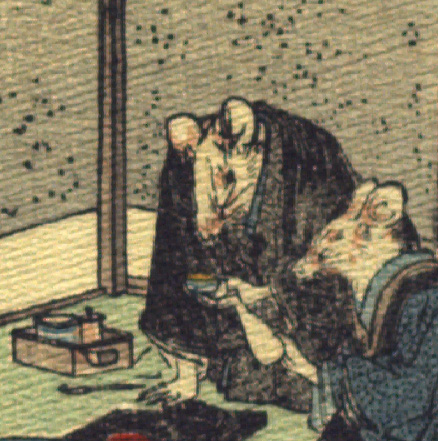

男の鼠。黒っぽい着物に羽織姿で、右手を膝元につき座っている。その脇に煙管と煙草盆らしきものが置かれている。左手に盃を持ち、女の鼠が傾ける徳利を受けている。手は人間のものである。
著作者：J.Dautremer／出典：親書誌：U426_nichibunken_0111：Le mariage de la souris／日付：2006／資源識別子：U426_nichibunken_0111_0002_0003
Copyright (c)2010- International Research Center for Japanese Studies, Kyoto, Japan. All rights reserved.